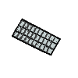
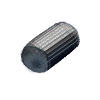
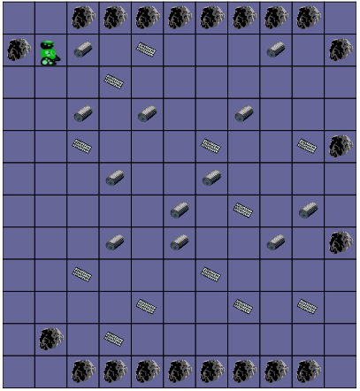
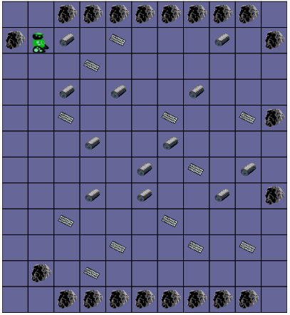
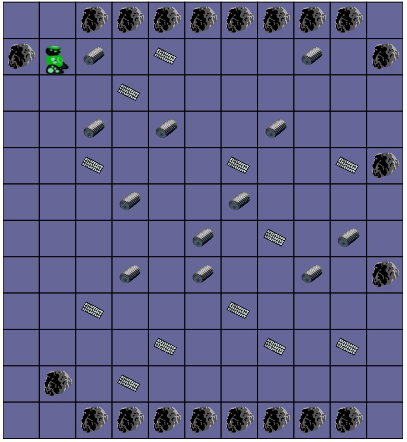

Ramasser les objets dans l'espace 5
   

Programmez le robot pour qu'il ramasse tous les objets perdus dans l'espace.
Attention, le même programme doit fonctionner sur les trois tests. Regardez-les avant de programmer !
Programmez le robot pour qu'il ramasse tous les objets perdus dans l'espace.
Attention, le même programme doit fonctionner sur les trois tests. Regardez-les avant de programmer !